import numpy as np
import matplotlib.pyplot as plt
xvals = np.array([1,2,3,4])
yvals = xvals**2
plt.plot(xvals, yvals)
plt.xlabel('x')
plt.ylabel('$x^2$')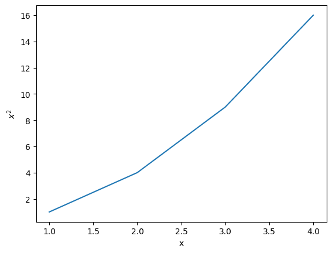
Run all cells marked In [ ] using the [\(\blacktriangleright\) Run] button above and think about the result you see. Be sure to do all exercises (in blank cells) and run all completed code cells.
If anything goes wrong, restart the kernel (in the menubar, select Kernel\(\rightarrow\)Restart). Or run text cells to get the formatted text back from markdown.
Matplotlib, and particularly its plotting capabilities in pyplot, are used to create publication quality figures of functions and data. The functionality is vast, and you will need to refer to the documentation frequently until you are familiar with what you need from it and the details of how it is used:
https://matplotlib.org/stable/tutorials/introductory/usage.html.
Most of the functionality we will be using are contained in the pyplot functionality of Matplotlib, which is normally accessed using:
import matplotlib.pyplot as pltThe various plotting tools and ways of specifying figure attributes are then accessed using the syntax:
plt.ATTRIBUTE(ARGUMENTS)Where ATTRIBUTE is replaced by the name of the function or other attribute you wish to access.
In its simplest terms the plot() function in pyplot takes a list of \(x\) values and plots each one on the \(x-\)axis against a corresponding \(y-\)value from a list of \(y\) values of the same length.
This is demonstrated for the squares of \(x=[1,2,3,4]\) below:
import numpy as np
import matplotlib.pyplot as plt
xvals = np.array([1,2,3,4])
yvals = xvals**2
plt.plot(xvals, yvals)
plt.xlabel('x')
plt.ylabel('$x^2$')
Many online examples and AI generated code will use this simple implicit method for plotting, so you should be aware of it. A nice introductory guide can be found here:
https://matplotlib.org/stable/tutorials/pyplot.html
These notes will use a more flexible (object oriented) method that allows much more fine control over figures: https://matplotlib.org/stable/users/explain/quick_start.html
The plt.subplots function returns two things: a figure canvas to construct a figure on, and a set of axes to draw specific plots on. * The fig object has .ATTRIBUTES for changing things such as the figure title, axis labels and decorations * The ax object has .ATTRIBUTES such as functions for specific plot types etc.
fig, ax = plt.subplots()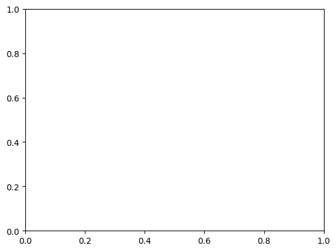
Once you have some axes (on a figure) you can start drawing things directly on them.
To plot a sine wave between \(0\) and \(\pi\):
pi=np.pi
# create a single set of axes on a figure
fig, ax = plt.subplots()
xvals = np.linspace(-pi,pi,100)
sinx = np.sin(xvals)
ax.plot(xvals, sinx)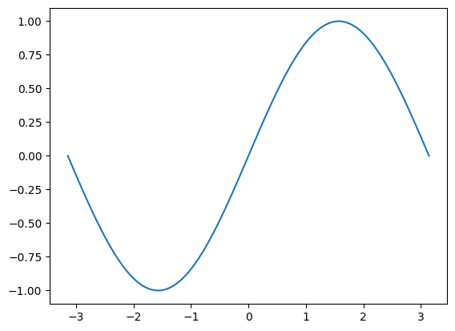
The possible arguments to plt.subplots() are given in the documentation here: https://matplotlib.org/stable/api/_as_gen/matplotlib.pyplot.subplots.html#matplotlib.pyplot.subplots
matplotlib.pyplot.subplots(nrows=1, ncols=1, *, sharex=False,
sharey=False, squeeze=True, subplot_kw=None,
gridspec_kw=None, **fig_kw)Of particular interest are the number of rows nrows and columns ncols of axes on the figure.
If you don’t specify these, there will only be a single set of axes as above, but if you give two values as arguments they stand for the number of rows and number of columns.
The ax object will then be a [list] of axes or a set of axes, depending on how you unpack the returned values:
fig, axs = plt.subplots(2)
axs[0].plot(xvals, np.sin(xvals))
axs[1].plot(xvals, np.cos(xvals))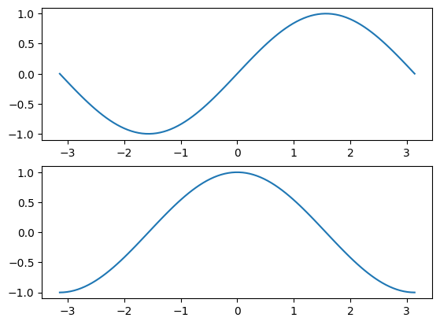
For a square \(2\times 2\) grid:
fig, axs = plt.subplots(2, 2)
[[ax1, ax2], [ax3, ax4]] = axs
ax1.plot(xvals, np.sin(xvals)) # x vs sin(x)
ax2.plot(np.sin(xvals), xvals) # flipped axes
ax3.plot(xvals, np.cos(xvals)) # x vs cos(x)
ax4.plot(np.sin(xvals), np.cos(xvals)) # parametric plot of sin(x) vs cos(x)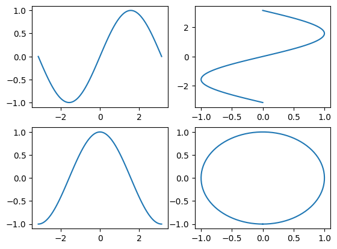
We can change the plotting style (and many other features) using extra arguments to the subplots and plot functions.
The plot attributes can be given as keyword arguments after the x-values and y-values.
The arguments are given as strings and consist of either a symbol to specify a marker or line type or the colour
(spelled using the American spelling color, without a “u”):
import numpy as np
import matplotlib.pyplot as plt
xvals = np.arange(11)
yvals = xvals**2
# set some x and y dimensions (in inch !!!)
dims = (8,8)
fig, ax = plt.subplots(figsize=dims) # specify the size of the figure
ax.plot(xvals, yvals, linestyle='--', marker='o', color='red')
plt.show()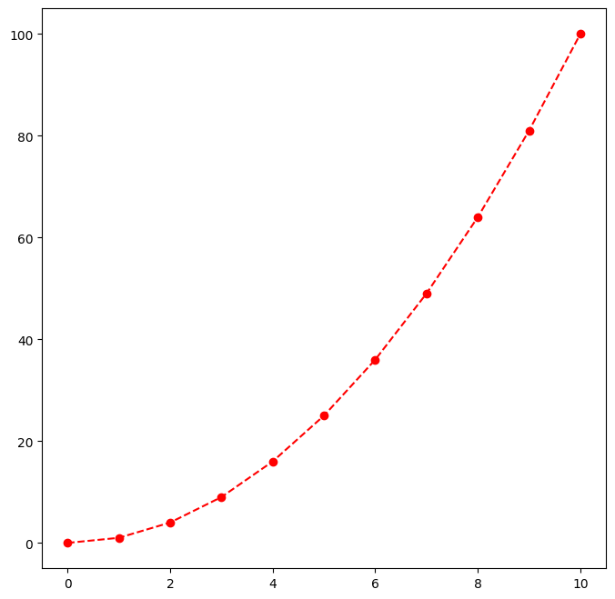
Use help(ax.plot) (in a new NoteBook) to see what else is available and experiment with line styles and points etc., as well as online resources.
The following example shows that we can plot more than one function on the same graph. A different colour is automatically used for each function.
import numpy as np
import matplotlib.pyplot as plt
pi = np.pi
xs = np.linspace(0, 2*pi, 50)
ys = np.sin(xs)
zs = np.cos(xs)
fig, ax = plt.subplots()
ax.plot(xs, ys)
ax.plot(xs, zs)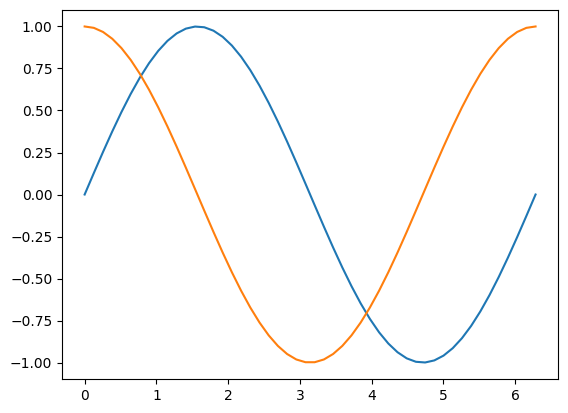
The plot can be improved by adding labels for the horizontal and vertical axes and a legend.
ax.set_xlabel("Angle t (radians)", size=12)
ax.set_ylabel("f (t)", size=12)
labels=["sin(t)", "cos(t)"]
ax.legend(labels)
fig # shows the figure again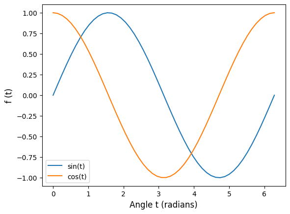
fig.savefig('FILENAME.extension') saves the figure to a file named FILENAME with the image format given by the .extension: e.g.: .png .jpg .pdf etc.
# run the code above (or paste it here) before running this cell
plt.savefig('sinusoids.png')<Figure size 640x480 with 0 Axes>A useful thing to do is to define a function that does all the steps of creating a figure template, so you can apply it to lots of different datasets.
The example below has quite a lot going on, so take your time to study it and try changing some of the figure properties for yourself.
import numpy as np, matplotlib.pyplot as plt
def plotter(xdata, ydata):
fig,ax = plt.subplots(1,2, figsize=(10,4))
ax[0].plot(xdata,ydata, linewidth=0.2, color='red', marker='*', markerfacecolor='green')
ax[1].hist(ydata, orientation='horizontal', edgecolor='black')
ax[0].set_ylabel('Data Values', size=12)
ax[0].set_xlabel('Data Index', size=12)
ax[1].set_xlabel('Data Counts', size=12)
ax[0].set_xlim(0,300)
for i in [0,1]:
ax[i].grid()
ax[i].set_ylim(0,80)
ax[0].text(-50,0,'(a)', size=15)
ax[1].text(-10,0,'(b)', size=15)
return fig
##########
x = np.arange(1,301)
y = np.random.normal(42,12,300)
fig = plotter(x,y)
##########
fig.savefig('fancyfig.pdf')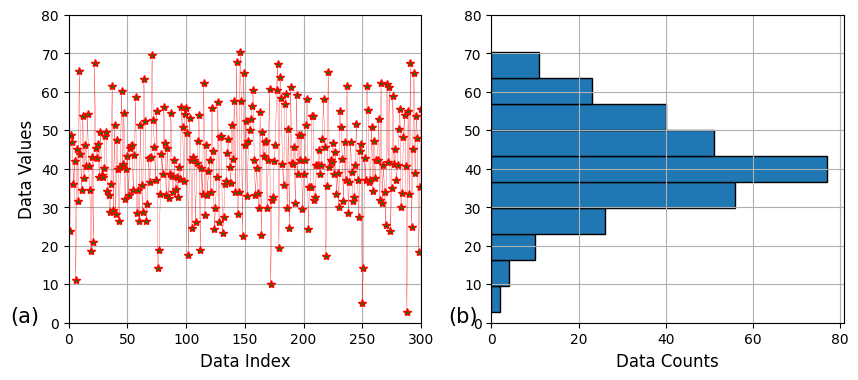
The plots using Pandas in the next section can be manipulated in similar ways using matplotlib.
Dictionary entries can also be numerical arrays (as well as any other object)
import numpy as np
thedata = dict() #another way of making an empty dictionary
thedata["Days"] = list(range(1,8))
thedata["Temperatures"] = np.array([23.3, 16.9, 21.8, 26.9, 23.5, 21.7, 19.8])
thedata{'Days': [1, 2, 3, 4, 5, 6, 7],
'Temperatures': array([23.3, 16.9, 21.8, 26.9, 23.5, 21.7, 19.8])}Which can also be manipulated:
thedata["Temperatures"] = thedata["Temperatures"]-10
thedata["Temperatures"]array([13.3, 6.9, 11.8, 16.9, 13.5, 11.7, 9.8])Pandas is a very powerful data analysis library that extends on the functionality of numpy and matplotlib.
It can be used to load, analyse plot and save data.
The basic data types used by pandas are the dataframe and the series. Here we’ll look at dataframes, which are 2D arrays with labels and related to a spreadsheet.
import pandas as pd
# make a dataframe called df out of our previous dictionary:
df = pd.DataFrame(thedata)
print(df) Days Temperatures
0 1 13.3
1 2 6.9
2 3 11.8
3 4 16.9
4 5 13.5
5 6 11.7
6 7 9.8In Jupyter-Notebooks dataframes will display with nice formatting by putting just their name at the end of a code cell:
df| Days | Temperatures | |
|---|---|---|
| 0 | 1 | 13.3 |
| 1 | 2 | 6.9 |
| 2 | 3 | 11.8 |
| 3 | 4 | 16.9 |
| 4 | 5 | 13.5 |
| 5 | 6 | 11.7 |
| 6 | 7 | 9.8 |
Columns can be accessed in the same way as dictionaries:
df["Temperatures"]0 13.3
1 6.9
2 11.8
3 16.9
4 13.5
5 11.7
6 9.8
Name: Temperatures, dtype: float64And they can be manipulated like Numpy arrays:
average = df["Temperatures"].mean()
print(average)
deviation = df["Temperatures"]-average
print(deviation)11.985714285714284
0 1.314286
1 -5.085714
2 -0.185714
3 4.914286
4 1.514286
5 -0.285714
6 -2.185714
Name: Temperatures, dtype: float64As well as writing new columns:
df["Deviations"] = deviation
df| Days | Temperatures | Deviations | |
|---|---|---|---|
| 0 | 1 | 13.3 | 1.314286 |
| 1 | 2 | 6.9 | -5.085714 |
| 2 | 3 | 11.8 | -0.185714 |
| 3 | 4 | 16.9 | 4.914286 |
| 4 | 5 | 13.5 | 1.514286 |
| 5 | 6 | 11.7 | -0.285714 |
| 6 | 7 | 9.8 | -2.185714 |
This can then be saved as a CSV using df.to_csv("<FILENAME>.csv") or even an Excel spreadsheet:
index=False argument makes sure the left-hand index column ([0,1,2,3,4,5,6]) does not get written to the spreadsheet.sheet_name argument allows you to name the sheet tab in Excel.df.to_excel("devdata.xlsx", index=False, sheet_name="Temperature Deviations")df.to_csv("devdata.csv", index=False)devdata.xlsx file that was just created!Lists and arrays can also be used to make Data-Frames:
import numpy as np
import pandas as pd
temps = np.array([23.3, 16.9, 21.8, 26.9, 23.5, 21.7, 19.8])
average = temps.mean()
devs = temps-average # deviation of each point from the mean
stdev = temps.std() # standard deviation of the dataset
zscore = devs/stdev # Z-score is the number of standard deviations each reading is from the mean
data = [temps, devs, zscore]
mynewdataframe = pd.DataFrame(data)
mynewdataframe| 0 | 1 | 2 | 3 | 4 | 5 | 6 | |
|---|---|---|---|---|---|---|---|
| 0 | 23.300000 | 16.900000 | 21.800000 | 26.900000 | 23.500000 | 21.700000 | 19.800000 |
| 1 | 1.314286 | -5.085714 | -0.185714 | 4.914286 | 1.514286 | -0.285714 | -2.185714 |
| 2 | 0.452977 | -1.752823 | -0.064008 | 1.693739 | 0.521908 | -0.098473 | -0.753320 |
# rotate the dataframe:
newdata = mynewdataframe.transpose()
newdata| 0 | 1 | 2 | |
|---|---|---|---|
| 0 | 23.3 | 1.314286 | 0.452977 |
| 1 | 16.9 | -5.085714 | -1.752823 |
| 2 | 21.8 | -0.185714 | -0.064008 |
| 3 | 26.9 | 4.914286 | 1.693739 |
| 4 | 23.5 | 1.514286 | 0.521908 |
| 5 | 21.7 | -0.285714 | -0.098473 |
| 6 | 19.8 | -2.185714 | -0.753320 |
A dataframe also has an object variable .columns inside which describes the column headings. * In the above example newdata.columns = [0, 1, 2] by default.
newdata.columns = "Temp", "Deviation", "Z-value"
newdata| Temp | Deviation | Z-value | |
|---|---|---|---|
| 0 | 23.3 | 1.314286 | 0.452977 |
| 1 | 16.9 | -5.085714 | -1.752823 |
| 2 | 21.8 | -0.185714 | -0.064008 |
| 3 | 26.9 | 4.914286 | 1.693739 |
| 4 | 23.5 | 1.514286 | 0.521908 |
| 5 | 21.7 | -0.285714 | -0.098473 |
| 6 | 19.8 | -2.185714 | -0.753320 |
A dataframe also has a .index property naming the rows, which can be changed:
newdata.index = ["Mon", "Tue", "Wed", "Thu", "Fri", "Sat", "Sun"]
newdata| Temp | Deviation | Z-value | |
|---|---|---|---|
| Mon | 23.3 | 1.314286 | 0.452977 |
| Tue | 16.9 | -5.085714 | -1.752823 |
| Wed | 21.8 | -0.185714 | -0.064008 |
| Thu | 26.9 | 4.914286 | 1.693739 |
| Fri | 23.5 | 1.514286 | 0.521908 |
| Sat | 21.7 | -0.285714 | -0.098473 |
| Sun | 19.8 | -2.185714 | -0.753320 |
See the very comprehensive sheet on moodle (also ones such as this one) to find out more details.
It is possible to import data into a data-frame from plain text files, CSV files or even excel spreadsheets.
import pandas as pd
data = pd.read_excel("Files/Case Study Data.xlsx", sheet_name="Data")
data/home/macha/anaconda3/lib/python3.9/site-packages/openpyxl/worksheet/_reader.py:329: UserWarning: Unknown extension is not supported and will be removed
warn(msg)| Project | Region | Country | Type | Rating | Cost.Million.USD | Total.Area.sqm | Total.Delivered.kWh | Delivered.Intensity.KWh.sqm.y | Electricity.Intensity.kWh.sqm.y | Gas.Intensity.kWh.sqm.y | Water.L.sqm | PV.Intensity.kWh.sqm | Solar.Thermal.kWh.sqm | Steam.kWh.sqm | District.Heating.Intensity.kWh.sqm | District.Cooling.Intensity.kWh.sqm | CHP.generated.Elec.kWh.sqm | CHP.generated.Heat.kWh.sqm | Biomass.Boiler.kWh.sqm.y | |
|---|---|---|---|---|---|---|---|---|---|---|---|---|---|---|---|---|---|---|---|---|
| 0 | Manitoba Hydro Place | Americas | Canada | Commercial | LEED-Platinum | 269.660000 | 65000.000000 | 7.280000e+06 | 112.000000 | NaN | NaN | NaN | NaN | NaN | NaN | NaN | NaN | NaN | NaN | NaN |
| 1 | Child Development Centre | Americas | Canada | University | LEED-Platinum | 22.310000 | 11612.140575 | 1.817300e+06 | 156.500000 | 47.000000 | 105.000000 | 69.000000 | 4.500000 | NaN | NaN | NaN | NaN | NaN | NaN | NaN |
| 2 | FIPKE Centre for Innovative Research | Americas | Canada | University | Green-Globe-5 | 30.555000 | 6323.794118 | 2.365099e+06 | 374.000000 | 307.000000 | 67.000000 | NaN | NaN | NaN | NaN | NaN | NaN | NaN | NaN | NaN |
| 3 | Transoceanica | Americas | Chile | Commercial | LEED-Gold | 20.924644 | 13959.068901 | 7.496020e+05 | 53.700000 | 53.700000 | NaN | 330.000000 | NaN | NaN | NaN | NaN | NaN | NaN | NaN | NaN |
| 4 | The Cooper Union | Americas | United States | University | LEED-Platinum | 112.000000 | 16255.124535 | 8.745257e+06 | 538.000000 | 306.000000 | 232.000000 | NaN | NaN | NaN | NaN | NaN | NaN | NaN | NaN | NaN |
| 5 | Biodesign Institute B | Americas | United States | University | LEED-Platinum | 78.500000 | 27184.466019 | 2.520000e+07 | 927.000000 | NaN | NaN | 602.000000 | NaN | NaN | NaN | NaN | NaN | NaN | NaN | NaN |
| 6 | DELL Children's Medical Center of Central Texas | Americas | United States | Hospital | LEED-Platinum | 137.000000 | 43948.234956 | 3.990500e+07 | 908.000000 | NaN | NaN | NaN | NaN | NaN | NaN | NaN | NaN | NaN | NaN | NaN |
| 7 | Kroon Hall | Americas | United States | University | LEED-Platinum | 33.500000 | 6205.254065 | 6.105970e+05 | 98.400000 | 83.000000 | NaN | 130.000000 | 15.400000 | NaN | NaN | NaN | NaN | NaN | NaN | NaN |
| 8 | Newark Center at Ohlone College | Americas | United States | University | LEED-Platinum | 58.000000 | 12806.321244 | 1.235810e+06 | 96.500000 | 38.750078 | 4.305564 | 425.000000 | 5.500000 | NaN | NaN | NaN | NaN | NaN | NaN | NaN |
| 9 | Tahoe Center for Environmental Sciences | Americas | United States | University | LEED-Platinum | 25.000000 | 4374.310680 | 4.505540e+05 | 103.000000 | 60.277898 | 7.534737 | NaN | 6.458346 | NaN | NaN | NaN | NaN | NaN | NaN | NaN |
| 10 | Center for Health and Healing, Oregon | Americas | United States | University | LEED-Platinum | 145.400000 | 38143.178709 | 1.784338e+07 | 467.800000 | 189.000000 | 281.000000 | 459.000000 | 1.200000 | NaN | NaN | NaN | NaN | NaN | NaN | NaN |
| 11 | NREL Research Support Facility 1 | Americas | United States | University | LEED-Platinum | 91.400000 | 33457.000000 | 3.713727e+06 | 111.000000 | NaN | NaN | 89.517889 | NaN | NaN | NaN | NaN | NaN | NaN | NaN | NaN |
| 12 | Twelve West | Americas | United States | Commercial | LEED-Platinum | 138.000000 | 39747.000000 | 5.476264e+06 | 137.778053 | 64.583463 | 36.597295 | NaN | NaN | NaN | NaN | NaN | NaN | NaN | NaN | NaN |
| 13 | 2000 Tower Oaks Blvd | Americas | United States | Commercial | LEED-Platinum | 63.600000 | 18619.361936 | 3.385000e+06 | 181.800000 | 181.800000 | NaN | 559.625000 | NaN | NaN | NaN | NaN | NaN | NaN | NaN | NaN |
| 14 | Regent's Hall | Americas | United States | University | LEED-Platinum | 63.000000 | 17859.989362 | 3.357678e+06 | 188.000000 | 123.656737 | NaN | 208.000000 | NaN | NaN | 65.014019 | NaN | NaN | NaN | NaN | NaN |
| 15 | Great River Energy | Americas | United States | Commercial | LEED-Platinum | 65.000000 | 15434.070000 | 3.086814e+06 | 200.000000 | 186.000000 | 14.000000 | NaN | NaN | NaN | NaN | NaN | NaN | NaN | NaN | NaN |
| 16 | Lewis & Clark State Office building | Americas | United States | Commercial | LEED-Platinum | 18.100000 | 11324.251203 | 2.513984e+06 | 222.000000 | 222.000000 | NaN | 75.000000 | 5.700000 | NaN | NaN | NaN | NaN | NaN | NaN | NaN |
| 17 | Johnson Controls Campus | Americas | United States | Commercial | LEED-Platinum | 73.000000 | 28745.989412 | 7.330227e+06 | 255.000000 | 168.697168 | 86.302832 | NaN | 1.100000 | 0.2 | NaN | NaN | NaN | NaN | NaN | NaN |
| 18 | Genzyme Center | Americas | United States | Commercial | LEED-Platinum | 140.000000 | 32021.614035 | 9.126160e+06 | 285.000000 | 149.000000 | NaN | 638.000000 | 0.800000 | NaN | 136.000000 | NaN | NaN | NaN | NaN | NaN |
| 19 | CSOB | Europe | Czech Republic | Commercial | LEED-Gold | 107.000000 | 82365.580435 | 1.515527e+07 | 184.000000 | 152.000000 | 32.000000 | 325.000000 | NaN | NaN | NaN | NaN | NaN | NaN | NaN | NaN |
| 20 | Lintulahti | Europe | Finland | Commercial | LEED-Platinum | 29.500000 | 12885.708920 | 2.744656e+06 | 213.000000 | 86.800000 | NaN | 221.000000 | NaN | NaN | NaN | 89.2 | 39.4 | NaN | NaN | NaN |
| 21 | EMGP 270 | Europe | France | Commercial | HQE-Office | 24.900000 | 9983.377193 | 2.276210e+06 | 228.000000 | 228.000000 | NaN | NaN | NaN | NaN | NaN | NaN | NaN | NaN | NaN | NaN |
| 22 | Paul Wunderlich-Haus | Europe | Germany | Public Sector | DNGB-Gold | 32.265000 | 22000.000000 | 1.056000e+06 | 48.000000 | 35.000000 | 12.000000 | 121.000000 | NaN | NaN | NaN | NaN | NaN | NaN | NaN | NaN |
| 23 | Federal Environmental Agency | Europe | Germany | Public Sector | DNGB-Gold | 91.800000 | 41000.000000 | 3.513700e+06 | 85.700000 | 22.900000 | 62.800000 | NaN | NaN | NaN | NaN | NaN | NaN | NaN | NaN | NaN |
| 24 | Heinrich Boll Foundation | Europe | Germany | Public Sector | DNGB-Gold | 16.875000 | 6964.509202 | 6.811290e+05 | 97.800000 | 61.100000 | 36.600000 | 681.000000 | NaN | NaN | NaN | NaN | NaN | NaN | NaN | NaN |
| 25 | Solon Corporate HQ | Europe | Germany | Commercial | DNGB-Gold | 63.450000 | 33451.000000 | 3.646159e+06 | 109.000000 | 41.900000 | 67.300000 | NaN | 9.200000 | NaN | NaN | NaN | NaN | 71.3 | 148.0 | NaN |
| 26 | Thyssenkrupp Q1 | Europe | Germany | Commercial | DNGB-Gold | 116.000000 | 29000.000000 | 4.350000e+06 | 150.000000 | NaN | NaN | NaN | NaN | NaN | NaN | NaN | NaN | NaN | NaN | NaN |
| 27 | SAP | Europe | Ireland | Commercial | NaN | 18.000000 | 6000.000000 | 1.009421e+06 | 168.000000 | 96.700000 | 71.500000 | 681.000000 | NaN | NaN | NaN | NaN | NaN | NaN | NaN | NaN |
| 28 | Hagaporten 3 | Europe | Sweden | Commercial | Miljobyggnad-Gold | 130.000000 | 30000.000000 | 4.050000e+06 | 135.000000 | 74.000000 | NaN | NaN | NaN | NaN | NaN | 43.0 | 18.0 | NaN | NaN | NaN |
| 29 | Eawag Forum Chriesbach | Europe | Switzerland | Commercial | NaN | 32.745000 | 8533.000000 | 4.197950e+05 | 49.200000 | 36.300000 | 12.900000 | 152.000000 | NaN | 3.1 | NaN | NaN | NaN | NaN | NaN | NaN |
| 30 | Daniel Swarovski Corp | Europe | Switzerland | Commercial | NaN | 57.000000 | 12627.187079 | 9.382000e+05 | 74.300000 | 74.300000 | NaN | 453.000000 | NaN | NaN | NaN | NaN | NaN | NaN | NaN | NaN |
| 31 | TNT Express HQ | Europe | The Netherlands | Commercial | LEED-Platinum | NaN | 17250.000000 | 1.966500e+06 | 114.000000 | NaN | NaN | 168.000000 | NaN | NaN | NaN | NaN | NaN | NaN | NaN | NaN |
| 32 | 3 Assembly Square | Europe | United Kingdom | Commercial | BREEAM-Excellent | 19.500000 | 6106.699387 | 9.953920e+05 | 163.000000 | 109.791886 | 13.993084 | NaN | NaN | NaN | NaN | NaN | NaN | NaN | NaN | 38.750078 |
| 33 | Suttie Centre | Europe | United Kingdom | University | BREEAM-Excellent | 22.356000 | 6500.000000 | 1.098500e+06 | 169.000000 | 169.000000 | NaN | NaN | NaN | NaN | NaN | NaN | NaN | NaN | NaN | NaN |
| 34 | 2 Victoria Avenue | Asia-Pacific | Australia | Commercial | Green-Star-Office-6 | NaN | 7185.000000 | 7.008530e+05 | 97.600000 | 66.400000 | 13.600000 | 725.000000 | NaN | NaN | NaN | NaN | NaN | NaN | NaN | NaN |
| 35 | Workplace6 | Asia-Pacific | Australia | Commercial+Retail | Green-Star-Office-6 | 52.080000 | 18000.000000 | 2.052000e+06 | 114.000000 | 99.484000 | 13.700000 | 117.000000 | NaN | NaN | NaN | NaN | NaN | NaN | NaN | NaN |
| 36 | One Shelley Street | Asia-Pacific | Australia | Commercial+Retail | Green-Star-Office-6 | NaN | 33000.000000 | 4.929499e+06 | 160.000000 | 96.200000 | 64.100000 | NaN | NaN | NaN | NaN | NaN | NaN | NaN | NaN | NaN |
| 37 | Council House 2 | Asia-Pacific | Australia | Public Sector | Green-Star-Office-6 | 71.740200 | 12536.000000 | 2.295816e+06 | 183.000000 | 77.200000 | 106.000000 | 592.000000 | NaN | NaN | NaN | NaN | NaN | NaN | NaN | NaN |
| 38 | The Gague | Asia-Pacific | Australia | Commercial+Retail | Green-Star-Office-6 | NaN | 10366.000000 | 2.467108e+06 | 238.000000 | 128.000000 | 109.500000 | 463.000000 | NaN | NaN | NaN | NaN | NaN | NaN | NaN | NaN |
| 39 | Vanke Center | Asia-Pacific | China | Commercial | LEED-Platinum | NaN | 14239.000000 | 1.980000e+06 | 139.000000 | NaN | NaN | NaN | 18.700000 | NaN | NaN | NaN | NaN | NaN | NaN | NaN |
| 40 | Suzlon One Earth | Asia-Pacific | India | Commercial | LEED-Platinum | NaN | 75809.000000 | 4.472731e+06 | 59.000000 | NaN | NaN | 304.000000 | NaN | NaN | NaN | NaN | NaN | NaN | NaN | NaN |
| 41 | Keio University 4th Building Hiyoshi Campus | Asia-Pacific | Japan | University | CASBEE-S | NaN | 18399.000000 | 2.907042e+06 | 158.000000 | NaN | NaN | NaN | NaN | NaN | NaN | NaN | NaN | NaN | NaN | NaN |
| 42 | Epson Innovation Center | Asia-Pacific | Japan | Commercial | CASBEE-S | NaN | 53372.000000 | 8.966496e+06 | 168.000000 | 168.000000 | NaN | 580.000000 | NaN | NaN | NaN | NaN | NaN | NaN | NaN | NaN |
| 43 | Honda Wako | Asia-Pacific | Japan | Commercial | CASBEE-S | NaN | 52112.714286 | 1.203804e+07 | 231.000000 | 156.000000 | 73.900000 | 714.000000 | 1.300000 | NaN | NaN | NaN | NaN | NaN | NaN | NaN |
| 44 | Nissan Global HQ | Asia-Pacific | Japan | Commercial | CASBEE-S | NaN | 78500.000000 | 2.457050e+07 | 313.000000 | NaN | NaN | 260.000000 | NaN | NaN | NaN | NaN | NaN | NaN | NaN | NaN |
| 45 | Kansai Electric Power HQ | Asia-Pacific | Japan | Commercial | CASBEE-S | NaN | 60000.000000 | 2.028000e+07 | 338.000000 | NaN | NaN | 462.000000 | NaN | NaN | NaN | NaN | NaN | NaN | NaN | NaN |
| 46 | Zero Energy Building | Asia-Pacific | Singapore | Public Sector | Green-Mark-Platinum | 8.800000 | 4500.000000 | 1.831500e+05 | 40.700000 | NaN | NaN | 98.000000 | NaN | NaN | NaN | NaN | NaN | NaN | NaN | NaN |
| 47 | School of Art, Design, Media at NTU | Asia-Pacific | Singapore | University | Green-Mark-Platinum | 28.800000 | 19975.000000 | 2.692630e+06 | 134.800000 | NaN | NaN | NaN | NaN | NaN | NaN | NaN | NaN | NaN | NaN | NaN |
| 48 | Magic School of Green Technology | Asia-Pacific | Taiwan | University | LEED-Platinum | 6.000000 | 3055.000000 | 1.235136e+05 | 40.430000 | NaN | NaN | NaN | NaN | NaN | NaN | NaN | NaN | NaN | NaN | NaN |
Individual columns can be extracted using the following syntax:
projects = data["Project"]
print(projects)0 Manitoba Hydro Place
1 Child Development Centre
2 FIPKE Centre for Innovative Research
3 Transoceanica
4 The Cooper Union
5 Biodesign Institute B
6 DELL Children's Medical Center of Central Texas
7 Kroon Hall
8 Newark Center at Ohlone College
9 Tahoe Center for Environmental Sciences
10 Center for Health and Healing, Oregon
11 NREL Research Support Facility 1
12 Twelve West
13 2000 Tower Oaks Blvd
14 Regent's Hall
15 Great River Energy
16 Lewis & Clark State Office building
17 Johnson Controls Campus
18 Genzyme Center
19 CSOB
20 Lintulahti
21 EMGP 270
22 Paul Wunderlich-Haus
23 Federal Environmental Agency
24 Heinrich Boll Foundation
25 Solon Corporate HQ
26 Thyssenkrupp Q1
27 SAP
28 Hagaporten 3
29 Eawag Forum Chriesbach
30 Daniel Swarovski Corp
31 TNT Express HQ
32 3 Assembly Square
33 Suttie Centre
34 2 Victoria Avenue
35 Workplace6
36 One Shelley Street
37 Council House 2
38 The Gague
39 Vanke Center
40 Suzlon One Earth
41 Keio University 4th Building Hiyoshi Campus
42 Epson Innovation Center
43 Honda Wako
44 Nissan Global HQ
45 Kansai Electric Power HQ
46 Zero Energy Building
47 School of Art, Design, Media at NTU
48 Magic School of Green Technology
Name: Project, dtype: objectAnd subsets can be pulled from the data and made into their own dataframe.
selected_columns = ["Total.Area.sqm", "Cost.Million.USD"]
data2 = data[selected_columns]
data2.index = projects # from the previous cell
data2| Total.Area.sqm | Cost.Million.USD | |
|---|---|---|
| Project | ||
| Manitoba Hydro Place | 65000.000000 | 269.660000 |
| Child Development Centre | 11612.140575 | 22.310000 |
| FIPKE Centre for Innovative Research | 6323.794118 | 30.555000 |
| Transoceanica | 13959.068901 | 20.924644 |
| The Cooper Union | 16255.124535 | 112.000000 |
| Biodesign Institute B | 27184.466019 | 78.500000 |
| DELL Children's Medical Center of Central Texas | 43948.234956 | 137.000000 |
| Kroon Hall | 6205.254065 | 33.500000 |
| Newark Center at Ohlone College | 12806.321244 | 58.000000 |
| Tahoe Center for Environmental Sciences | 4374.310680 | 25.000000 |
| Center for Health and Healing, Oregon | 38143.178709 | 145.400000 |
| NREL Research Support Facility 1 | 33457.000000 | 91.400000 |
| Twelve West | 39747.000000 | 138.000000 |
| 2000 Tower Oaks Blvd | 18619.361936 | 63.600000 |
| Regent's Hall | 17859.989362 | 63.000000 |
| Great River Energy | 15434.070000 | 65.000000 |
| Lewis & Clark State Office building | 11324.251203 | 18.100000 |
| Johnson Controls Campus | 28745.989412 | 73.000000 |
| Genzyme Center | 32021.614035 | 140.000000 |
| CSOB | 82365.580435 | 107.000000 |
| Lintulahti | 12885.708920 | 29.500000 |
| EMGP 270 | 9983.377193 | 24.900000 |
| Paul Wunderlich-Haus | 22000.000000 | 32.265000 |
| Federal Environmental Agency | 41000.000000 | 91.800000 |
| Heinrich Boll Foundation | 6964.509202 | 16.875000 |
| Solon Corporate HQ | 33451.000000 | 63.450000 |
| Thyssenkrupp Q1 | 29000.000000 | 116.000000 |
| SAP | 6000.000000 | 18.000000 |
| Hagaporten 3 | 30000.000000 | 130.000000 |
| Eawag Forum Chriesbach | 8533.000000 | 32.745000 |
| Daniel Swarovski Corp | 12627.187079 | 57.000000 |
| TNT Express HQ | 17250.000000 | NaN |
| 3 Assembly Square | 6106.699387 | 19.500000 |
| Suttie Centre | 6500.000000 | 22.356000 |
| 2 Victoria Avenue | 7185.000000 | NaN |
| Workplace6 | 18000.000000 | 52.080000 |
| One Shelley Street | 33000.000000 | NaN |
| Council House 2 | 12536.000000 | 71.740200 |
| The Gague | 10366.000000 | NaN |
| Vanke Center | 14239.000000 | NaN |
| Suzlon One Earth | 75809.000000 | NaN |
| Keio University 4th Building Hiyoshi Campus | 18399.000000 | NaN |
| Epson Innovation Center | 53372.000000 | NaN |
| Honda Wako | 52112.714286 | NaN |
| Nissan Global HQ | 78500.000000 | NaN |
| Kansai Electric Power HQ | 60000.000000 | NaN |
| Zero Energy Building | 4500.000000 | 8.800000 |
| School of Art, Design, Media at NTU | 19975.000000 | 28.800000 |
| Magic School of Green Technology | 3055.000000 | 6.000000 |
import pandas as pd
data = pd.read_excel("Files/Case Study Data.xlsx", sheet_name="Data")
cost = data["Cost.Million.USD"]
area = data["Total.Area.sqm"]
costpermetre2 = cost/area
# create a new column
data["Cost.Per.sqm"] = costpermetre2
selected_columns = ["Project", "Total.Area.sqm", "Cost.Million.USD", "Cost.Per.sqm"]
# create a new DataFrame with the selected columns as the data and set the project name column as the index
newdata = data[selected_columns].set_index("Project")
newdata/home/macha/anaconda3/lib/python3.9/site-packages/openpyxl/worksheet/_reader.py:329: UserWarning: Unknown extension is not supported and will be removed
warn(msg)| Total.Area.sqm | Cost.Million.USD | Cost.Per.sqm | |
|---|---|---|---|
| Project | |||
| Manitoba Hydro Place | 65000.000000 | 269.660000 | 0.004149 |
| Child Development Centre | 11612.140575 | 22.310000 | 0.001921 |
| FIPKE Centre for Innovative Research | 6323.794118 | 30.555000 | 0.004832 |
| Transoceanica | 13959.068901 | 20.924644 | 0.001499 |
| The Cooper Union | 16255.124535 | 112.000000 | 0.006890 |
| Biodesign Institute B | 27184.466019 | 78.500000 | 0.002888 |
| DELL Children's Medical Center of Central Texas | 43948.234956 | 137.000000 | 0.003117 |
| Kroon Hall | 6205.254065 | 33.500000 | 0.005399 |
| Newark Center at Ohlone College | 12806.321244 | 58.000000 | 0.004529 |
| Tahoe Center for Environmental Sciences | 4374.310680 | 25.000000 | 0.005715 |
| Center for Health and Healing, Oregon | 38143.178709 | 145.400000 | 0.003812 |
| NREL Research Support Facility 1 | 33457.000000 | 91.400000 | 0.002732 |
| Twelve West | 39747.000000 | 138.000000 | 0.003472 |
| 2000 Tower Oaks Blvd | 18619.361936 | 63.600000 | 0.003416 |
| Regent's Hall | 17859.989362 | 63.000000 | 0.003527 |
| Great River Energy | 15434.070000 | 65.000000 | 0.004211 |
| Lewis & Clark State Office building | 11324.251203 | 18.100000 | 0.001598 |
| Johnson Controls Campus | 28745.989412 | 73.000000 | 0.002539 |
| Genzyme Center | 32021.614035 | 140.000000 | 0.004372 |
| CSOB | 82365.580435 | 107.000000 | 0.001299 |
| Lintulahti | 12885.708920 | 29.500000 | 0.002289 |
| EMGP 270 | 9983.377193 | 24.900000 | 0.002494 |
| Paul Wunderlich-Haus | 22000.000000 | 32.265000 | 0.001467 |
| Federal Environmental Agency | 41000.000000 | 91.800000 | 0.002239 |
| Heinrich Boll Foundation | 6964.509202 | 16.875000 | 0.002423 |
| Solon Corporate HQ | 33451.000000 | 63.450000 | 0.001897 |
| Thyssenkrupp Q1 | 29000.000000 | 116.000000 | 0.004000 |
| SAP | 6000.000000 | 18.000000 | 0.003000 |
| Hagaporten 3 | 30000.000000 | 130.000000 | 0.004333 |
| Eawag Forum Chriesbach | 8533.000000 | 32.745000 | 0.003837 |
| Daniel Swarovski Corp | 12627.187079 | 57.000000 | 0.004514 |
| TNT Express HQ | 17250.000000 | NaN | NaN |
| 3 Assembly Square | 6106.699387 | 19.500000 | 0.003193 |
| Suttie Centre | 6500.000000 | 22.356000 | 0.003439 |
| 2 Victoria Avenue | 7185.000000 | NaN | NaN |
| Workplace6 | 18000.000000 | 52.080000 | 0.002893 |
| One Shelley Street | 33000.000000 | NaN | NaN |
| Council House 2 | 12536.000000 | 71.740200 | 0.005723 |
| The Gague | 10366.000000 | NaN | NaN |
| Vanke Center | 14239.000000 | NaN | NaN |
| Suzlon One Earth | 75809.000000 | NaN | NaN |
| Keio University 4th Building Hiyoshi Campus | 18399.000000 | NaN | NaN |
| Epson Innovation Center | 53372.000000 | NaN | NaN |
| Honda Wako | 52112.714286 | NaN | NaN |
| Nissan Global HQ | 78500.000000 | NaN | NaN |
| Kansai Electric Power HQ | 60000.000000 | NaN | NaN |
| Zero Energy Building | 4500.000000 | 8.800000 | 0.001956 |
| School of Art, Design, Media at NTU | 19975.000000 | 28.800000 | 0.001442 |
| Magic School of Green Technology | 3055.000000 | 6.000000 | 0.001964 |
Pandas is very good at plotting the data.
ax = newdata["Total.Area.sqm"].plot(kind="bar", figsize=(15,5)) # returns a set of figure axes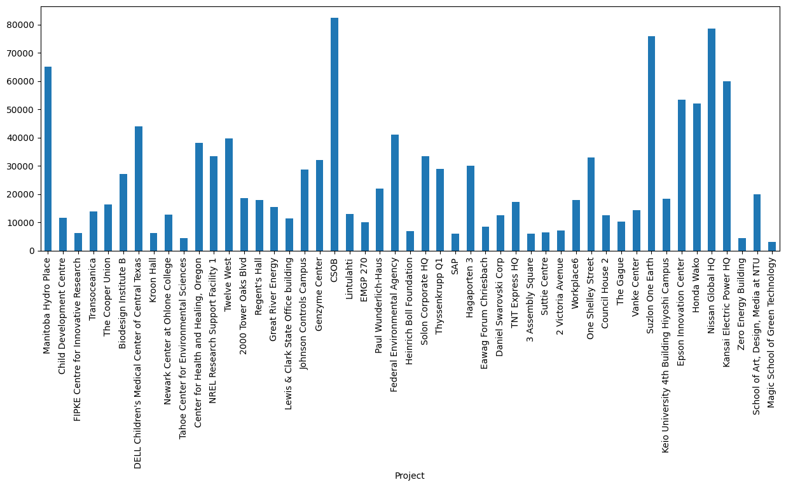
Different plot styles are available
ax1 = newdata["Total.Area.sqm"].plot.hist(edgecolor="black")
ax2 = newdata.plot.scatter(x="Total.Area.sqm", y="Cost.Million.USD")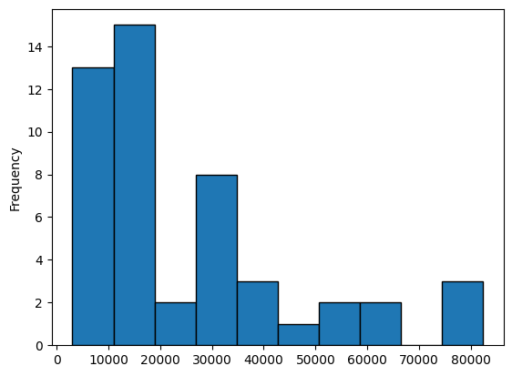
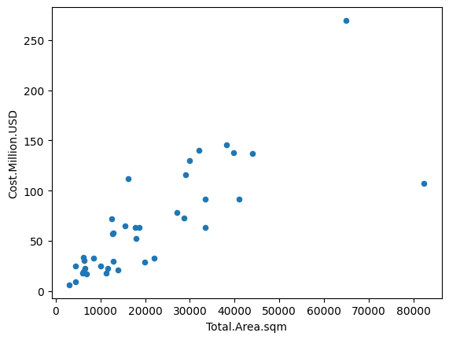
Plots can be saved or manipulated using this method:
ax2.figure.savefig("scatterplot.png") # how to access the figure canvas and save itAnd plots can appear on the same axes or in subplots.
sortdata = newdata.sort_values(by="Total.Area.sqm")
ax3 = sortdata.plot.bar(subplots=True, figsize=(15,9))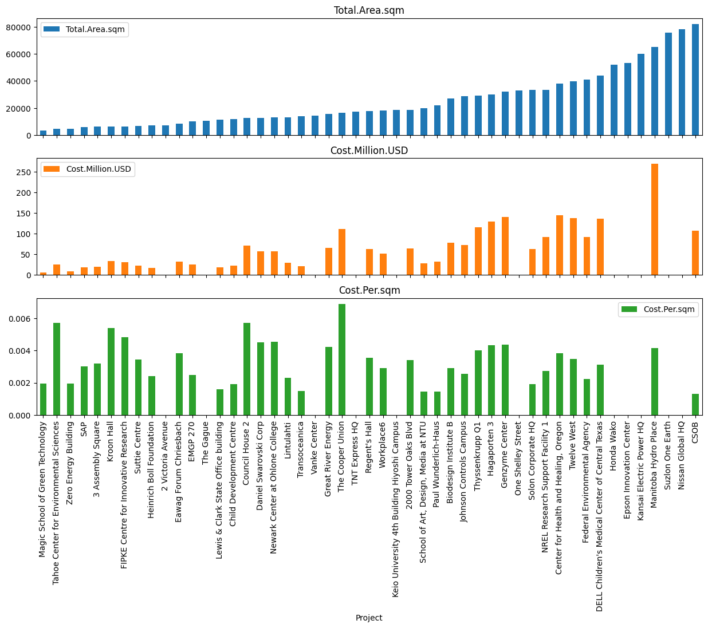
Data can also be filtered in the following way:
costmilUSD = data2["Cost.Million.USD"] #select the column
condition = costmilUSD>100 #filter selected values
data3 = data2[condition]
data3| Total.Area.sqm | Cost.Million.USD | |
|---|---|---|
| Project | ||
| Manitoba Hydro Place | 65000.000000 | 269.66 |
| The Cooper Union | 16255.124535 | 112.00 |
| DELL Children's Medical Center of Central Texas | 43948.234956 | 137.00 |
| Center for Health and Healing, Oregon | 38143.178709 | 145.40 |
| Twelve West | 39747.000000 | 138.00 |
| Genzyme Center | 32021.614035 | 140.00 |
| CSOB | 82365.580435 | 107.00 |
| Thyssenkrupp Q1 | 29000.000000 | 116.00 |
| Hagaporten 3 | 30000.000000 | 130.00 |
This can then be combined into a single line, which is more compact but harder to read.
data3 = data2[data2["Cost.Million.USD"]>100]